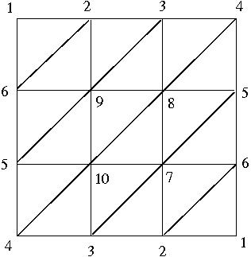

| Previous |
About HAP: Simplicial, Cubical,
Permutahedral and Regular CW-Complexes |
next |

and then calculate its integral homologies from the associated cellular chain complex.
> [5,6,9],[5,9,10],[8,9,10],[7,8,10],[5,7,8],[5,6,7],
> [4,5,10],[3,4,10],[3,7,10],[2,3,7],[2,6,7],[1,2,6]];;
gap> P:=MaximalSimplicesToSimplicialComplex(L);
Simplicial complex of dimension 2.
gap> C:=ChainComplex(P);
Chain complex of length 2 in characteristic 0 .
gap> Homology(C,0);
[ 0 ]
gap> Homology(C,1);
[ 2 ]
gap> Homology(C,2);
[ ]
gap> S:=MaximalSimplicesToSimplicialComplex(Combinations([0..n+1],n+1));
Simplicial complex of dimension 10.
gap> C:=ChainComplex(S);
Chain complex of length 10 in characteristic 0 .
gap> List([0..n],m->Homology(C,m));
[ [ 0 ], [ ], [ ], [ ], [ ], [ ], [ ], [ ], [ ], [ ], [ 0 ], [ ] ]
Simplicial complex of dimension 2.
gap> C:=ChainComplex(Q);
Chain complex of length 2 in characteristic 0 .
gap> Homology(C,0);
[ 0 ]
gap> Homology(C,1);
[ ]
gap> Homology(C,2);
[ ]
2.
Pure Cubical Complexes
gap> b:=[[1,1,1],[1,0,1],[1,1,1]];;
gap> c:=[[1,1,1],[1,1,1],[1,1,1]];;
gap> array:=[a,b,c];;
gap> S2:=PureCubicalComplex(array);
Pure cubical complex of dimension 3.
gap> C:=ChainComplex(S2);
Chain complex of length 3 in characteristic 0 .
gap> Homology(C,0);
[ 0 ]
gap> Homology(C,1);
[ ]
gap> Homology(C,2);
[ 0 ]
gap> Homology(C,3);
[ ]
N:
(Pure Cubical Complexes) ------> (Simplicial Complexes)
that sends a pure cubical complex X to a simplicial complex NX of the same homotopy type. If X is d-dimensional then we refer to the d-dimensional cells in X as facets. The vertices of NX are the facets of X, and the dimensional simplices of NX are the subsets of this vertex set having a non-trivial common intersection. We refer to NX as the Cech complex of X. The following commands compute the Cech complex of the above cubical 2-sphere and (again) determine the low dimensional homology of the 2-sphere.
Simplicial complex of dimension 3.
gap> C:=ChainComplex(NS2);
Chain complex of length 3 in characteristic 0 .
gap> Homology(C,0);
[ 0 ]
gap> Homology(C,1);
[ ]
gap> Homology(C,2);
[ 0 ]
gap> Homology(C,3);
[ ]
Pure cubical complex of dimension 3.
gap> C:=ChainComplex(S2);;
gap> D:=ChainComplex(R);;
gap> C!.dimension(3);
26
gap> D!.dimension(3);
6
Simplicial complex of dimension 2.
The following commands use a threshold of 400 to represent the image

as a pure cubical complex. The complex has 40949 2-dimensional cells.
Pure cubical complex of dimension 2.
gap> C:=ChainComplex(image);
Chain complex of length 2 in characteristic 0 .
gap> C!.dimension(0);
45664
gap> C!.dimension(1);
86630
gap> C!.dimension(2);
40949
- Find a homotopy retract R of the pure cubical complex.
- Find a large contractible subcomplex S in R.
- Construct the quotient C(R)/C(S) of the cellular chain complexes.
- Use the fact that Hn(R) = Hn( C(R)/C(S) ) for n>0 and that H0(R) is isomorphic to the direct sum H0(C(R)/C(S))+H0(S).
Pure cubical complex of dimension 2.
gap> R:=ContractedComplex(image);
Pure cubical complex of dimension 2.
gap> S:=ContractibleSubcomplexOfPureCubicalComplex(R);
Pure cubical complex of dimension 2.
gap> C:=ChainComplexOfPair(R,S);
Chain complex of length 2 in characteristic 0 .
gap> Homology(C,0);
[ 0, 0 ]
gap> Homology(C,1);
[ 0, 0, 0, 0, 0, 0, 0, 0, 0, 0, 0, 0, 0, 0, 0, 0, 0, 0, 0, 0 ]
The following commands produce a pure cubical homotopy retract R, and then a cubcial retract K, of the above black and white image. Considered as CW-complexes, R involves a total of 16975 cells while K involves a total of 7005 cells
Pure cubical complex of dimension 2.
gap> R:=ContractedComplex(image);
Pure cubical complex of dimension 2.
gap> K:=PureCubicalComplexToCubicalComplex(R);
Cubical complex of dimension 2.
gap> Size(K);
16975
gap> ContractCubicalComplex(K);
gap> Size(K);
7005
Non-regular cubical complex of dimension 2 with discrete vector field.
gap> Size(L);
25
gap> C:=ChainComplex(L);
Chain complex of length 2 in characteristic 0 .
gap> Homology(C,0);
[ 0, 0, 0 ]
gap> Homology(C,1);
[ 0, 0, 0, 0, 0, 0, 0, 0, 0, 0, 0, 0, 0, 0, 0, 0, 0, 0, 0, 0 ]
The following commands construct a homotopy retract of P, and then construct the Cech complex NP (which is defined as in the case of pure cubical complexes). An advantage of pure permutahedral complexes over pure cubical complexes is that a pure permutahedral complex of dimension n has Cech complex of the same dimension.
Pure Permutahedral Complex of dimension 2.
gap> ContractPurePermutahedralComplex(P);
gap> NP:=PureComplexToSimplicialComplex(P,5);
Simplicial complex of dimension 2.
gap> Homology(D,0);
[ 0, 0, 0 ]
gap> Homology(NP,1);
[ 0, 0, 0, 0, 0, 0, 0, 0, 0, 0, 0, 0, 0, 0, 0, 0, 0, 0, 0, 0 ]
The following example creates a 4-dimensional pure cubical complex T representing a standard torus. It then computes the Cech complex NT which is a 15-dimensional simplicial complex. It then converts the data type of NT into that of a regular CW-somplex. This CW-complex Y involves a total of 1172776 cells.
Pure cubical complex of dimension 2.
gap> T:=DirectProductOfPureCubicalComplexes(Circle,Circle);
Pure cubical complex of dimension 4.
gap> NT:=CechComplexOfPureCubicalComplex(T);
Simplicial complex of dimension 15.
gap> Y:=SimplicialComplexToRegularCWSpace(NT);
Regular CW-space of dimension 15
gap> Size(Y);
1172776
[ [ 2, 5872 ], [ 1, 1116 ], [ 1, 2017 ], [ 0, 196 ] ]
gap> List([0..15],C!.dimension);
[ 1, 2, 1, 0, 0, 0, 0, 0, 0, 0, 0, 0, 0, 0, 0, 0 ]
X ----> Y1 <---- Y2
----> Y3 <---- Y4 ----> ... <--- ZR
To illustrate the benefit of this approach we consisder the suspension S of the above black and white image. The pure complex S has 182727 facets. Our algorithm for finding a homotopy retract of S produces a homotopy retract R with 29809 facets. Our algorithm for finding a zig-zag homotopy equivalent complex produces a homotopy equivalent pure cubcial complex ZR with just 304 facets.
Finally, we produce the cellular chain complex of a non-regular CW-complex V of the homotopy type of S. The CW-complex V has one 0-cell, two 1-cells and twenty 2-cells. This is the minimum possible number of cells for any CW-complex of the homotopy type of S.
gap> X:=SuspensionOfPureCubicalComplex(image);
Pure cubical complex of dimension 3.
gap> Size(X);
182727
gap> R:=ContractedComplex(X);
Pure cubical complex of dimension 3.
gap> Size(R);
29809
gap> ZR:=ZigZagContractedPureCubicalComplex(S);
Pure cubical complex of dimension 3.
gap> Size(ZR);
304
gap> V:=DVFReducedCubicalComplex(PureCubicalComplexToCubicalComplex(ZR));
Non-regular cubical complex of dimension 3 with discrete vector field.
gap> C:=ChainComplex(V);
Chain complex of length 3 in characteristic 0 .
gap> C!.dimension(0);
1
gap> C!.dimension(1);
2
gap> C!.dimension(2);
20
gap> C!.dimension(3);
0
gap> Length(L);
400
gap> S:=VectorsToSymmetricMatrix(L);;
The following commands compute the mod 2 homology of NG(n) for n=2,4,6, ..., 70. The results suggest that the data points in L were sampled from a manifold with two path components and second mod 2 homology of rank 2.
> G:=SymmetricMatrixToGraph(S,n);
> Print("H_0= ",RipsHomology(G,0,2)," H_1= ",RipsHomology(G,1,2),"\n");
> od;
H_0= 400 H_1= 0
H_0= 328 H_1= 0
H_0= 152 H_1= 4
H_0= 32 H_1= 22
H_0= 8 H_1= 22
H_0= 6 H_1= 10
H_0= 6 H_1= 2
H_0= 2 H_1= 0
H_0= 2 H_1= 2
H_0= 2 H_1= 4
H_0= 2 H_1= 2
H_0= 2 H_1= 2
H_0= 2 H_1= 54
H_0= 2 H_1= 2
H_0= 2 H_1= 2
H_0= 2 H_1= 2
H_0= 2 H_1= 2
H_0= 2 H_1= 70
H_0= 2 H_1= 2
H_0= 2 H_1= 2
H_0= 2 H_1= 2
H_0= 2 H_1= 2
H_0= 2 H_1= 2
H_0= 2 H_1= 2
H_0= 2 H_1= 2
H_0= 2 H_1= 90
H_0= 1 H_1= 2
H_0= 1 H_1= 2
H_0= 1 H_1= 2
H_0= 1 H_1= 8
H_0= 1 H_1= 0
H_0= 1 H_1= 0
H_0= 1 H_1= 0
H_0= 1 H_1= 0
H_0= 1 H_1= 0
H_0= 1 H_1= 0
| Previous
Page |
Contents |
Next
page |